Crim250 Final Project
“North Vs. South: A case study of firearms usage in homocide”
Hanzhao Kuang
Collabration with Eliza Epstein, Carolina Herrera Figueroa, Carmen Harrison Montoya
December 5, 2021
Crim 250 Final Project
UCR Homicide Data Research
The following paper explores the process of analyzing homicide data within the US. Initially, the research question was “Is there a correlation between the perpetrator’s gender and whether the homicide was considered justifiable within the last five years.” Before delving into the motivation behind this question, it is important to note that while the project started here, it took a detour. There were many issues with the data set used, so eventually it was determined that with the time and resources at hand, we would not be able to answer this question. That said, the overarching theme of homicide research was maintained. However, we deviated from the relationship between gender and justifiable homicides to weapons used by states. We landed on the question “Are there differences in Weapon Type Used in homicides in Northern vs Southern States?” While on the surface these topics seem unrelated, they fall under the same general motivating theme of flaws within the homicide rates in the US.
The motivation to analyze the initial relationship between gender and justifiable homicides came from the fact that many research studies have shown that males are more impulsive than females, and commit more homicides overall. Thus, our hypothesis was that for citizens, justifiable homicides would be committed more by women. For police officers, on the other hand, males would be committing more justifiable homicides - considering that the majority of police officers are male.
The initial research design was to test if there were differences in gender for justifiable and non-justifiable murders. That said, when conducting the analysis, it became clear that given the time and resources available, it would not be a feasible study. The data file was extremely large, with many empty cells. Without the skillset to “clean” the data file in R, the plots were impossible to analyze.
The initial data set used had many empty cells. Even though it was attempted to exclude these, as learned in class, it ultimately would not allow us to make the desired bar plot excluding the leftmost bar which skewed the size of the rest. While the seven other bars on the stacked bar plot do have useful information, it was decided that it would not be possible to clean the dataset in the time available. Additionally, with the empty cells throughout the entire data set, the t-tests run were not useful.
That said, after extensive efforts to make the question work, it was ultimately decided that we should work with a new data set. In exploring themes under the same overarching idea of imbalances in homicide rates, we elected to focus on weapons used by state. While it is known that citizens in the south are more likely to own firearms, the question we wanted to study was whether there was a significant difference in weapon type used in homicides in Northern vs Southern states.
The motivation for this data analysis stemmed from the ongoing issues regarding gun homicides in the US. While access to guns is a federal issue, each state has their own laws regarding firearms. In 2019 there were a total of 39, 707 total deaths from firearms in the US. Further, in 2018 firearms were responsible for about 75% of homicides in the US. It has been estimated that about 31% of households in the US possess firearms and about 22% of adults own at least one firearm. The hypothesis for our study was that southern states will have significantly higher rates of firearms used in homicides. The null hypothesis is therefore that there will be no difference between northern and southern states in levels of firearms used in homicides.
The dataset used to analyze this question is part of the FBI’s Uniform Crime Report of 2019, for which law enforcement agencies throughout the United States provide summary reports on Part I offenses (which include criminal homicide, arson and assault) . This is voluntary and counties are not obligated to send any reports to the FBI. This survey covers 93% of the population, and only reports on crimes that are known to the police. The team specifically focused on Table 20 of the report, which looks at murder by state and types of weapons. It is important to note that Alabama and Florida are excluded from our analysis because the data for these was extremely limited.
We decided to create maps based on the weapons used in homicides for each state. These maps simply show the number of a certain type of weapon used in every state. For example, the map below shows the number of handgunds that were used in homicides in each state. On the map, California is depicted with the lightest shade of blue, indicating a very high number of handguns used in homicides relative to other states. 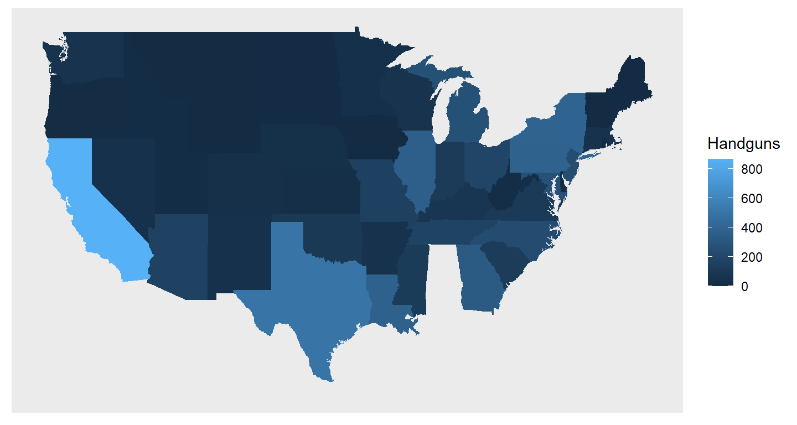
The map below shows the number of rifles used in homicides in each state.
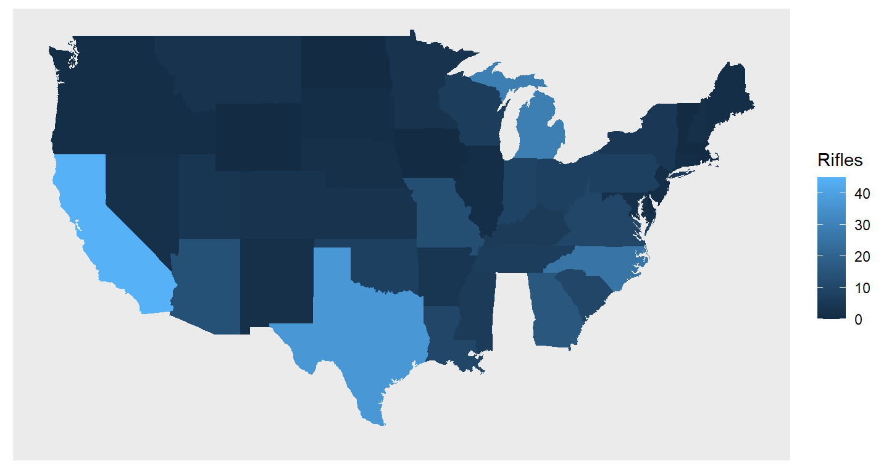
This map (below) instead shows the number of shotguns used in homicides. For this specific type of weapon we can see that California and Texas are very similar.
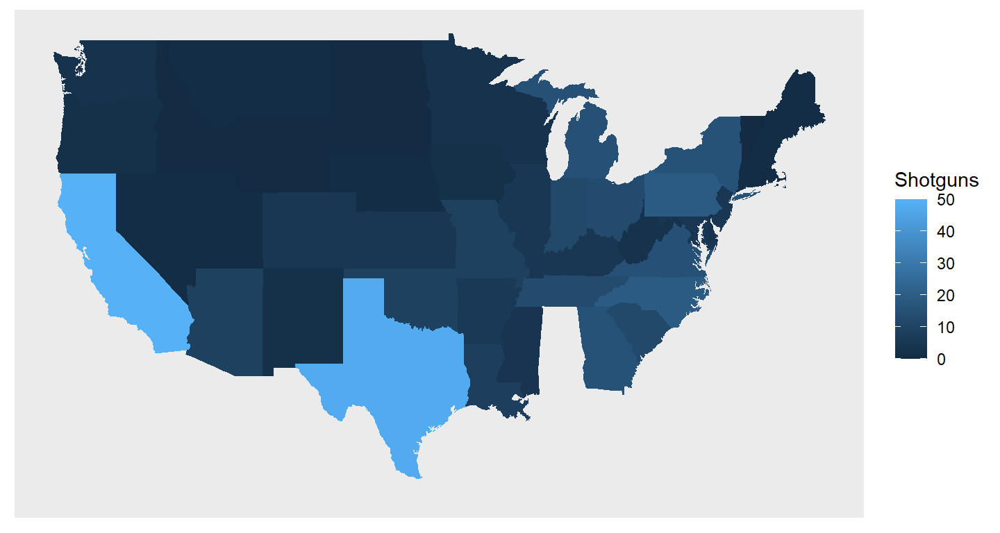
The following map (below), instead shows the percentage of homicides that involved a firearm, rather than a different type of weapon.
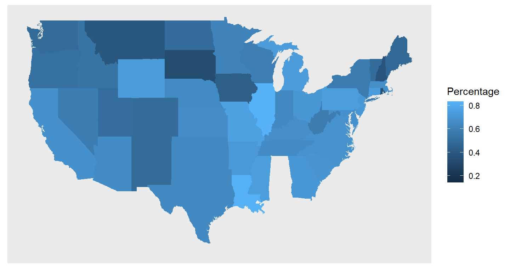
Next, we created a map using a binary of “North” vs “South” states based on the distinctions made by the census bureau. 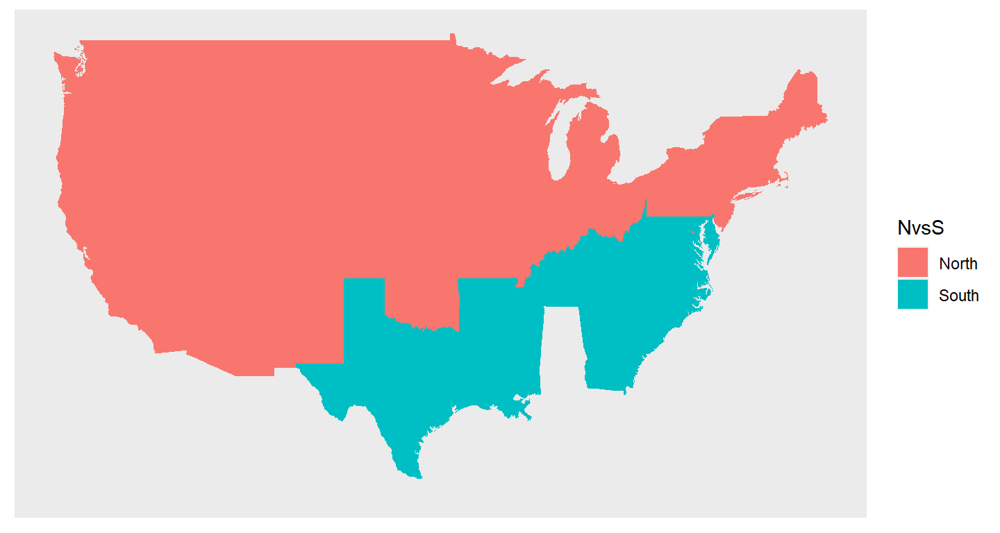
We then created a bar chart showing the number of states in each region to visually express that in the distribution of states more are classified as being Northern States than Southern States.
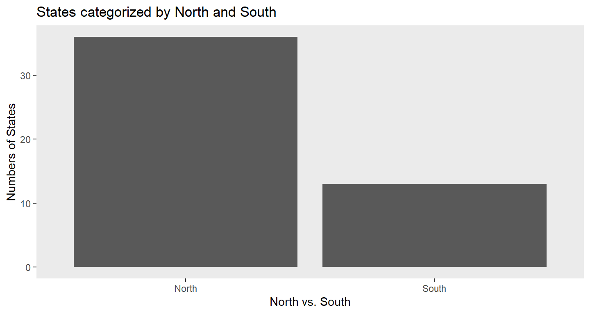
Lastly, we conducted our data analysis, where our results demonstrated a significant p-value allowing us to reject the null hypothesis and a significant coefficient estimate for a difference between North and South numbers of firearm deaths (NVS1).
##
## Call:
## lm(formula = Percentage ~ NVS, data = dat.weapon)
##
## Residuals:
## Min 1Q Median 3Q Max
## -0.43292 -0.07577 -0.00084 0.08786 0.25830
##
## Coefficients:
## Estimate Std. Error t value Pr(>|t|)
## (Intercept) 0.57577 0.02153 26.748 < 2e-16 ***
## NVS1 0.11464 0.04179 2.743 0.00859 **
## ---
## Signif. codes: 0 '***' 0.001 '**' 0.01 '*' 0.05 '.' 0.1 ' ' 1
##
## Residual standard error: 0.1292 on 47 degrees of freedom
## Multiple R-squared: 0.138, Adjusted R-squared: 0.1197
## F-statistic: 7.524 on 1 and 47 DF, p-value: 0.008588Beyond this, we conducted a regression analysis to further solidify our hypothesis, show that the four assumptions are satisfied to reject the null hypothesis, and reinforce our analysis by taking into account our missing data and the inequality in the number of north and south states.
Before our assumptions, the goodness of fit of our graph is satisfied through our Residuals vs. X line (with Washington DC as the lower outlier) and Residuals vs. Fitted (with DC again as outlier).
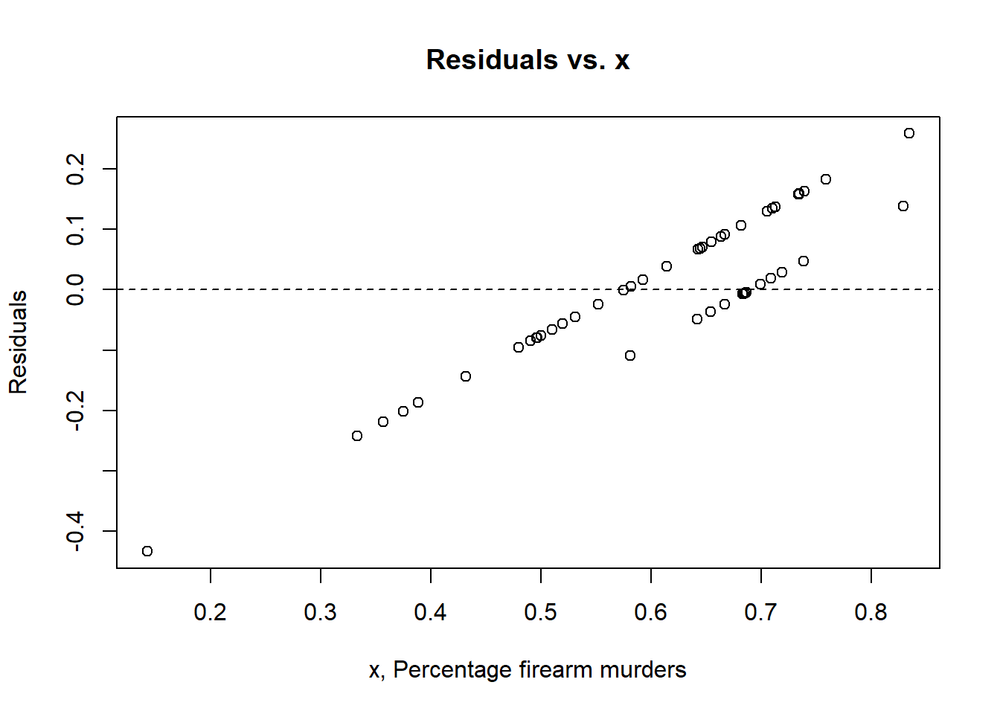 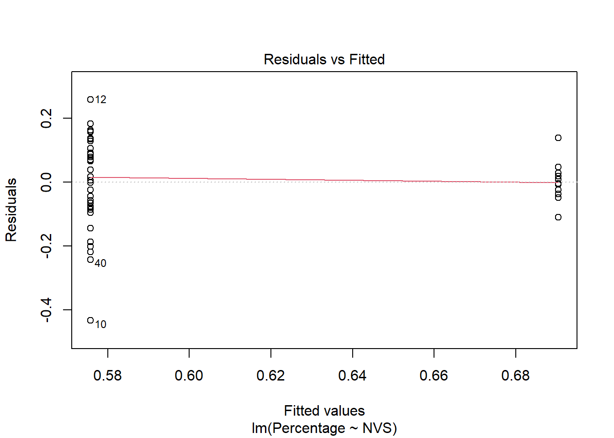
The assumption of independence between observations is also satisfied as shown by the Residuals vs X plot. We can also assume that simply because a state is located in the North or South that it will automatically have a lower/higher use of firearms in homicides.
The assumption of homoscedasticity is satisfied through our Scale-Location Plot, despite a slight skew downwards as the fitted values grow larger.
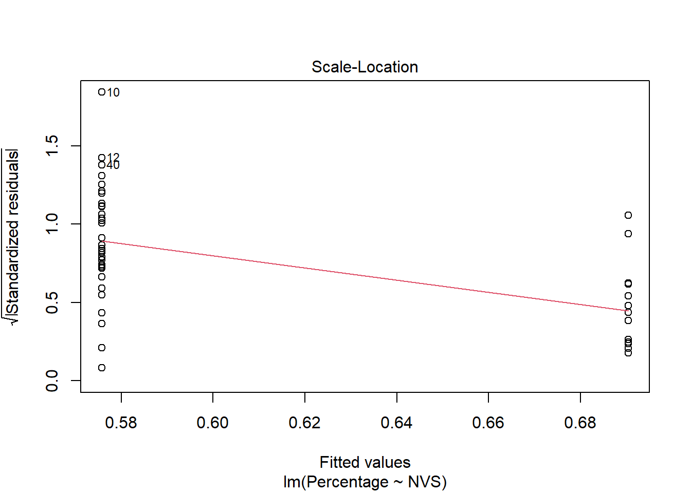
The assumption of normality is mostly satisfied through the linearity of our Normal Q-Q plot since there are some light tails between -2 and -1, and 1 and 2.
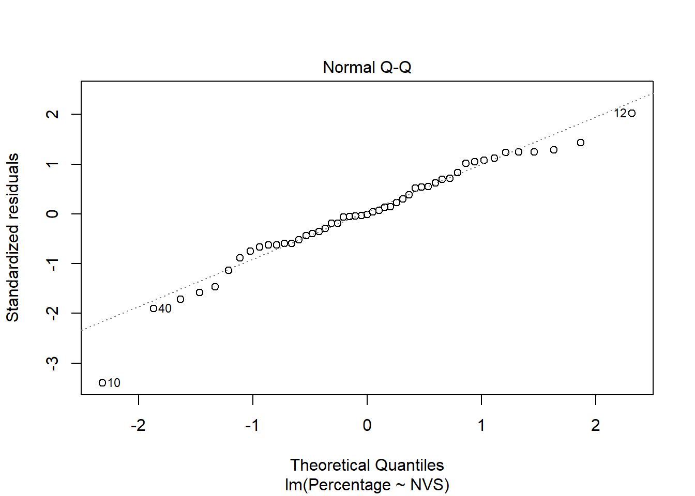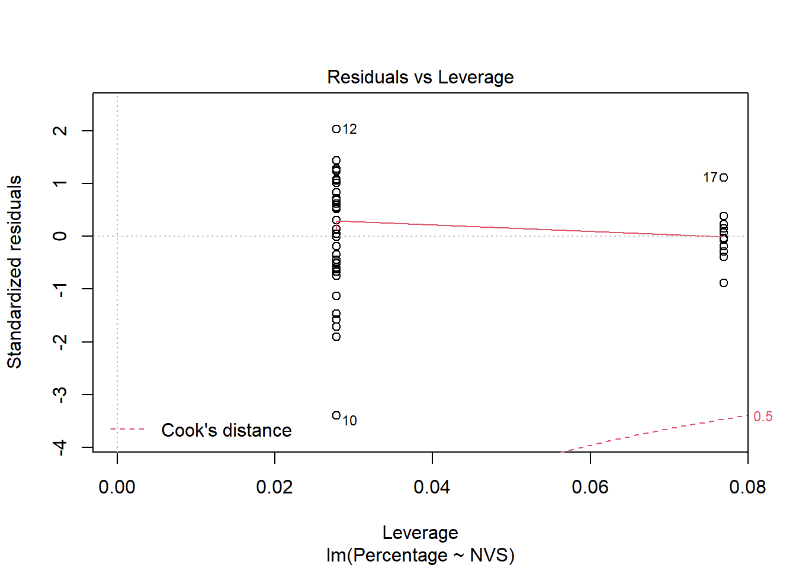
Lastly, the assumption of linearity is satisfied through the residuals vs x plot.
In order to counter our missing data of Alabama and Florida, while also taking into account more northern states than southern states, we conducted two side-by-side histograms for comparison while also using the Welch Two-Sample T-Test. Within both the histograms and the t-test, we are able to reject the null hypothesis by using the significance level of our p-value.
## `stat_bin()` using `bins = 30`. Pick better value with `binwidth`.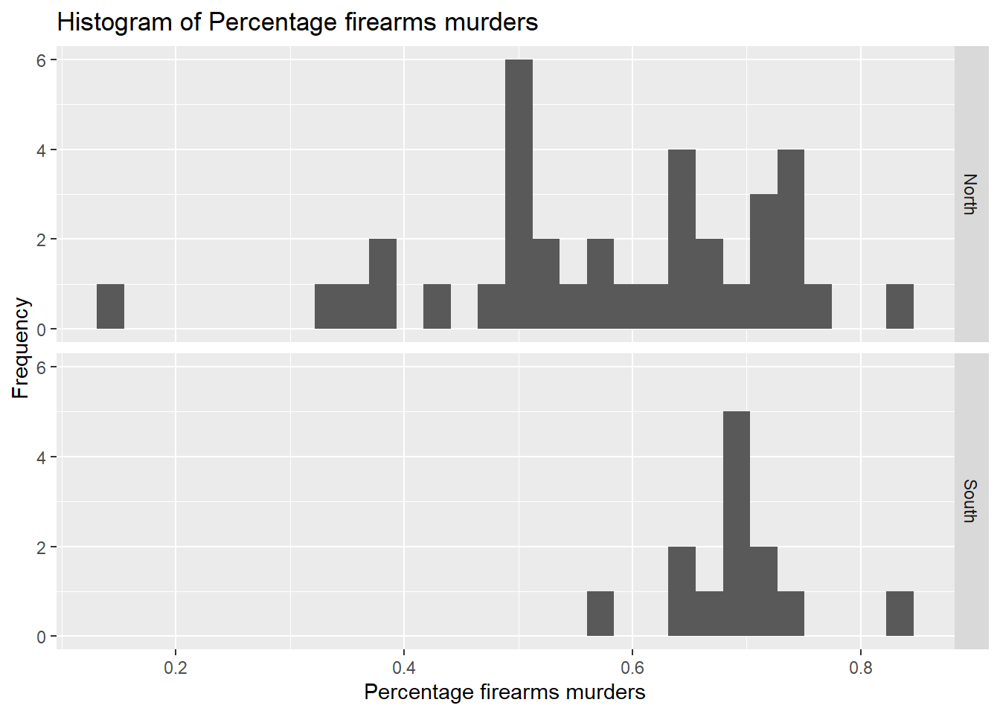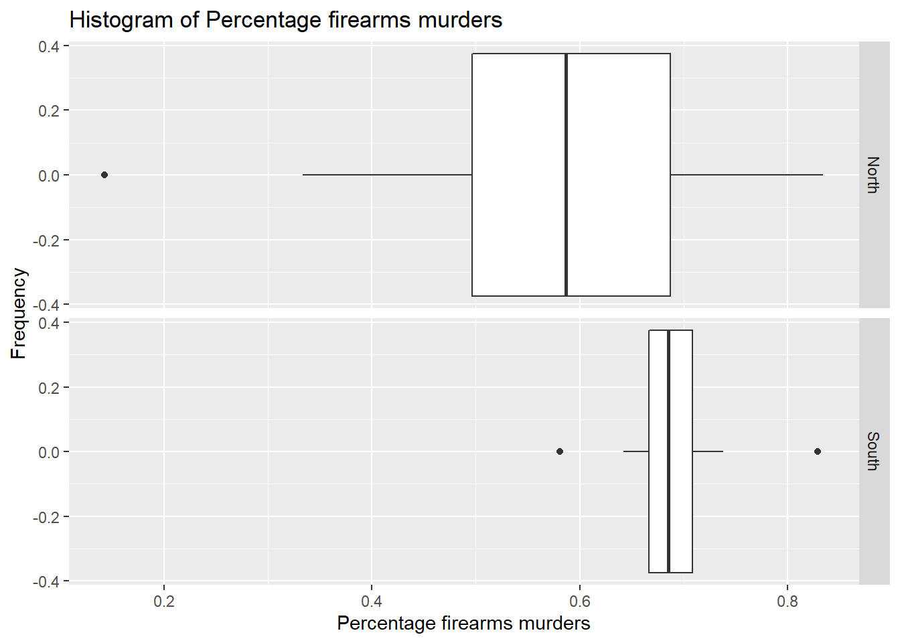
##
## Welch Two Sample t-test
##
## data: Percentage by NVS
## t = -3.9524, df = 46.572, p-value = 0.0002611
## alternative hypothesis: true difference in means between group 0 and group 1 is not equal to 0
## 95 percent confidence interval:
## -0.17300023 -0.05627267
## sample estimates:
## mean in group 0 mean in group 1
## 0.5757728 0.6904093Overall, through the significance of our p-values, our coefficient estimate detailing a difference between North and South state firearm deaths, and our ability to reject the null hypothesis, our hypothesis stands true. Thus, there is a significant difference between firearm deaths in states identified as North and South. In summary, Southern states had much higher numbers of homicide by firearm in 2019. Due to higher gun ownership and less stringent firearm laws within Southern states, these states are much more likely to commit homicides by varying types of firearms.
Whether it be due to state firearm laws, personal and social beliefs around firearms, the state’s political landscape, or another factor, confounds may also affect our conclusion. As portrayed through our DAG, the location of the state (whether in the North or South) should thus affect gun laws, which would then affect the weapon type used in homicides within the state. However, another path that can be considered is the location of the state, which affects how individuals feel socially and politically about guns, thus affecting the weapon used in homicides within the state. Nonetheless, political and social perspectives of firearms may also be wrapped into the reasoning for more stringent or relaxed gun laws, and thus, these confounds do not truly alter our hypothesis or perceived outcome. Below, we demonstrate our DAG.
Homicide and Weapon Type DAG
Returning to our initial hypothesis, issues in data analysis rendered us incapable of studying our research question within the given timeframe and within our limited access to the data. Due to missing chunks of data, issues in processing through R, and a constrained time frame to examine large amounts of data, we were unable to complete the study of our first hypothesis. Through these limitations, we were able to better understand the research process overall. Through confounds in data, analysis, and time, a researcher must be able to adapt their hypothesis and their study to the times. Within our project, we were able to rework our question to further understand a current large concern within the United States: the correlation between firearm ownership, state firearm laws, and state homicides by firearm. In doing so, we learned that there is truly a correlation between Southern states, with relaxed gun laws and increased ownership, and firearm deaths.
Now, beyond the outcomes of the data analysis, this project taught us valuable lessons about the research process. Oftentimes researchers have questions that they are motivated to answer yet the data is either unavailable or cannot be readily used. This project leads to the motivation of future research. With more time and resources, it would be interesting to delve into the original research question. Further, it could be thought provoking to combine the two questions and analyze if there are gender differences in the weapons used for homicides in the US.
\[\\[2in]\]